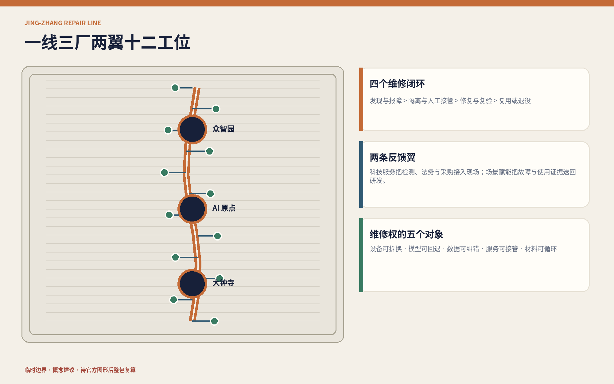
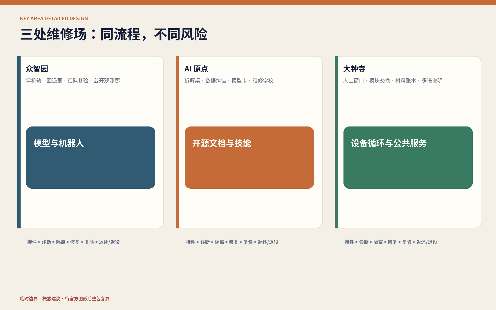
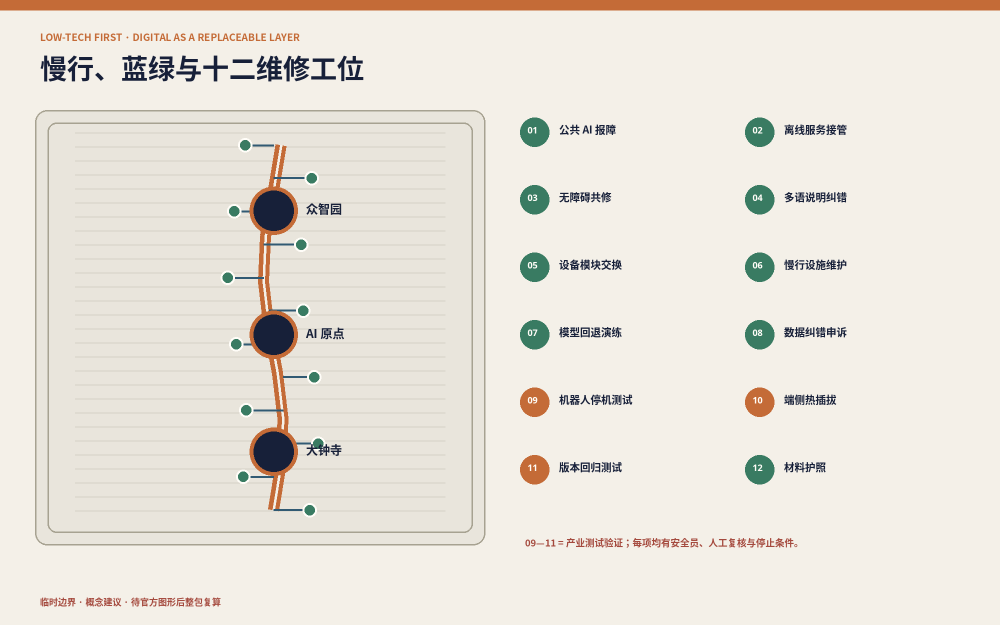
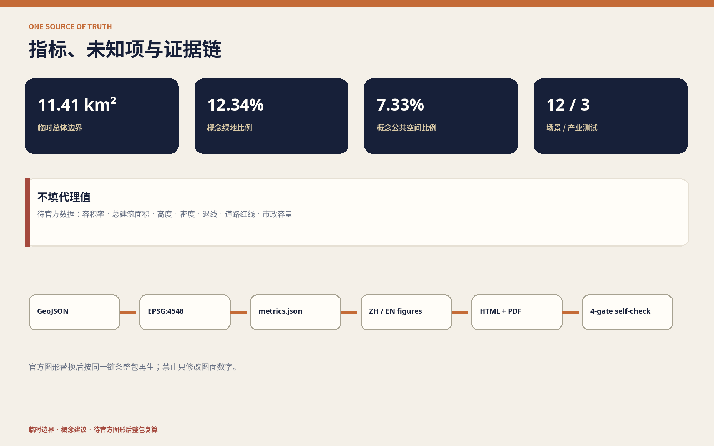

11.41 km²临时总体边界
12.34%概念绿地比例
7.33%概念公共空间比例

三层范围
重点区域
用地分区
交通慢行
蓝绿公共空间
建筑
更新项目
AI 场景
核心指标
任务覆盖
自检状态
来源
假设

AI 场景
- 01 公共AI报障
- 02 离线接管
- 03 无障碍共修
- 04 多语纠错
- 05 模块交换
- 06 慢行维护
- 07 模型回退
- 08 数据纠错
- 09 机器人停机
- 10 端侧热插拔
- 11 版本回归
- 12 材料护照


来源 / 假设
官方公告与任务书确认任务；临时边界只用于生成和讨论；国际案例只提供机制；详细来源见 sources.json，缺口见 assumptions.json。